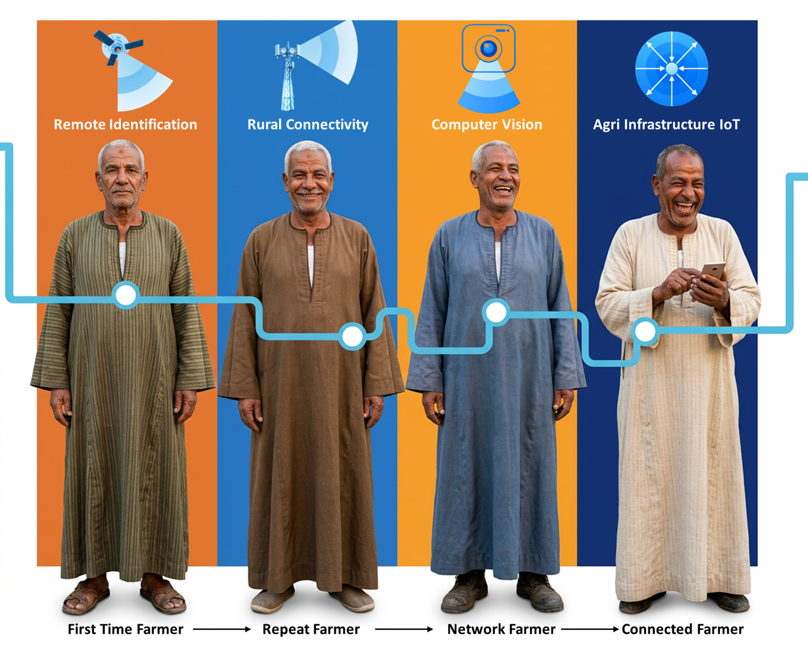
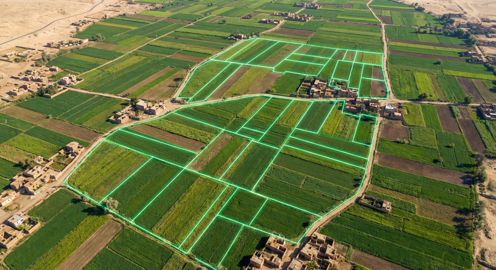
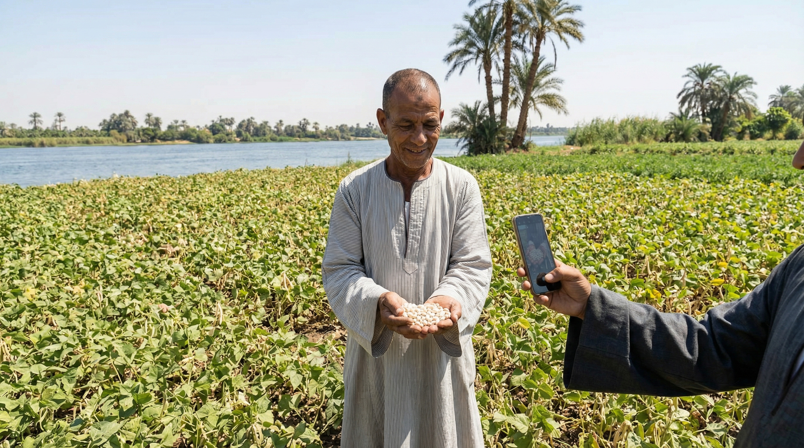
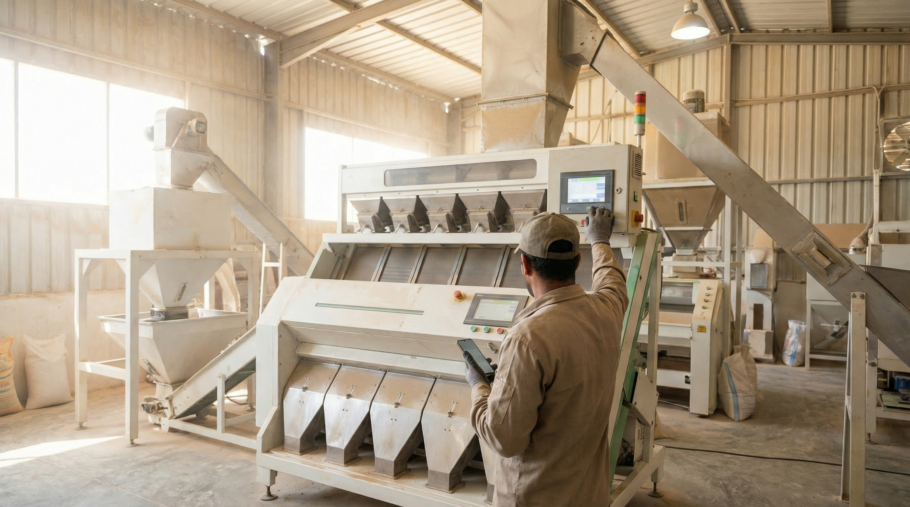
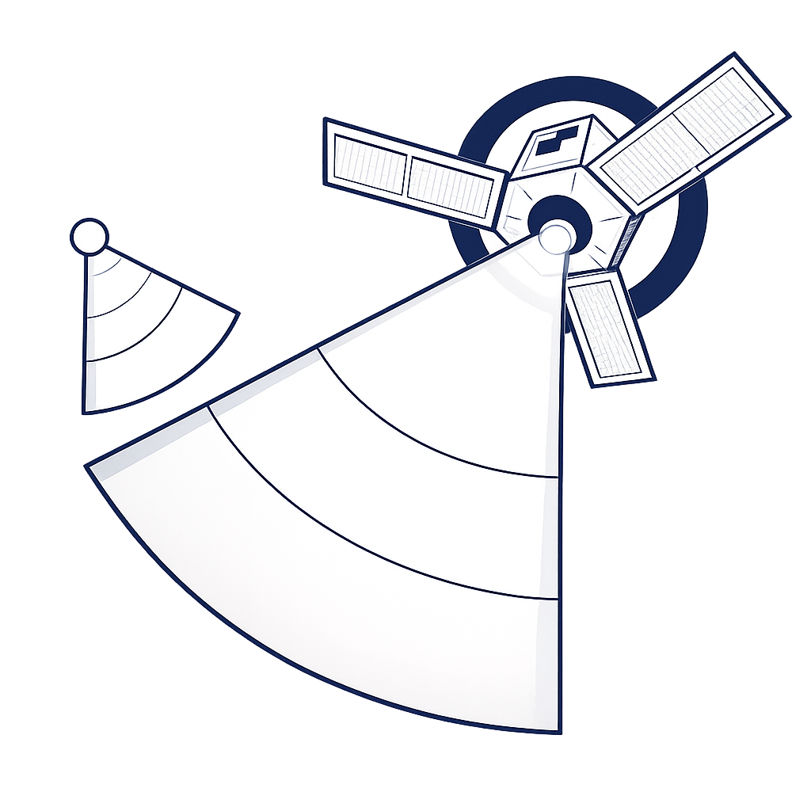
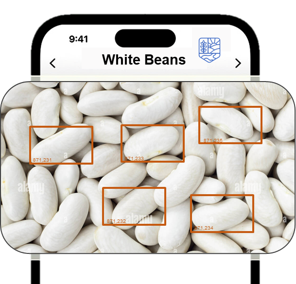

For generations, small farmers have been disconnected from institutional agricultural markets. Shunah’s technology changes that.
Small-scale farmers comprise almost 79% of our supplier base.
Satellite, computer-aided vision, and IoT — one connected operating system for dry crops.
Identify and locate dry crops remotely using satellite imagery.

Identify and locate dry crops remotely to accelerate aggregation decisions and reduce field uncertainty.
Assess crop quality using rapid image-based grading.

Standardize quality assessment with rapid image-based grading for consistent export specifications.
Connect hubs, scales, and logistics for real-time coordination.

Connect hubs, scales, storage, and logistics to enable real-time crop flow orchestration.
From field detection to market execution — one connected intelligence loop combining satellite imagery, AI, IoT infrastructure, and real-world feedback.

OVERVIEW
Satellite crop identification has many use cases; crop identification, yield estimation, and even crop management — but for now we are focusing on crop identification.
IN-DEPTH
Register known land plots, link them to farmers and hubs, and build the geo-referenced base map used by the engine.
TECHNOLOGY
We use satellite imagery and computer vision to detect crops, verify on-ground reality, and continuously retrain models using real feedback — transforming field signals into trusted intelligence.

Step description
Processing, storage, transport, scales, and freight — all connected as one intelligent network.
Shunah’s current IoT connects various stakeholders. Crop flow is orchestrated with zero human interaction.
Connected intake and processing points across the network.
Transport capacity linked into live crop movement orchestration.
Export execution partners connected for downstream shipment flow.
Digital weigh points feeding trusted measurement events into the system.
Quality checks and lab signals connected directly into execution logic.
Warehousing and storage nodes mapped for live capacity allocation.
Connect processing stations into the operating system so intake, capacity, and execution status become visible in real time.
Processing, storage, transport, scales, and freight — all connected as one network.